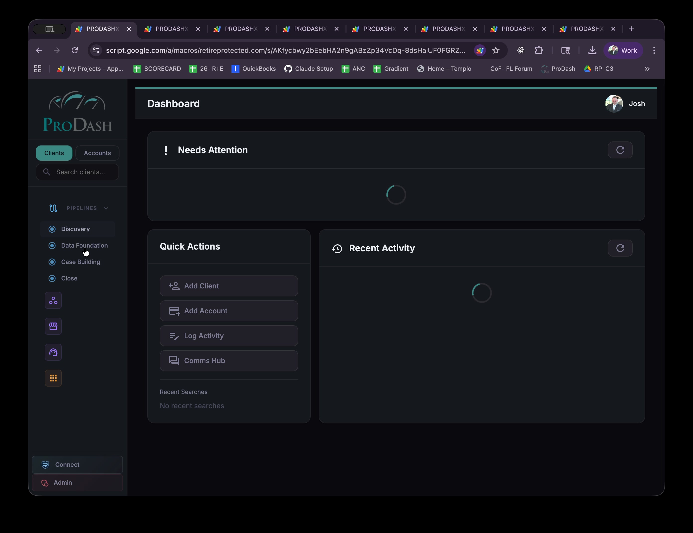
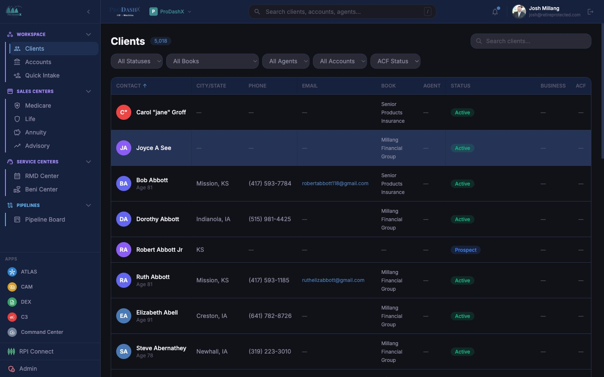
| Element | GAS | toMachina | Status |
|---|---|---|---|
| Metric Summary Cards | 4 cards (Total Clients, Linked, Active, Unlinked) | Moved to Command Center | PARTIAL Command Center pending |
| Trend Chart | Area chart with time series | Planned for Command Center + BigQuery | PARTIAL Data layer ready, UI pending |
| Sidebar Navigation | Module list with icons | Full sidebar with sections + collapsible groups | PASS |
| User Orientation | Visual landing page | Direct to Clients grid (faster) | PASS Intentional design change |
| Top Bar | Basic action bar | Global search + portal switcher + notifications | PASS |
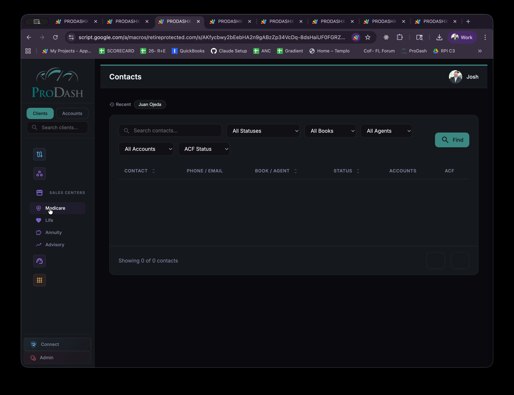
| Element | GAS | toMachina | Status |
|---|---|---|---|
| Filter Bar | 5 specific filters with colored fills | 2 generic filters, muted styling | PARTIAL Need power filters back |
| Sidebar Tabs (Client/Account) | Toggle at top of sidebar | Separate nav items | PASS Different approach, works |
| Quick Intake | Floating panel, PDF drop + paste | Being rebuilt (was wrong implementation) | FAIL Rebuilding in progress |
| Search | Sidebar-scoped to clients | Global top bar search | PASS |
| Top Bar | Basic title + avatar | Logo + switcher + search + notifications | PASS |
| Data Table | Empty (no data connection) | 5,018 real clients from Firestore | PASS |
| Columns | Name, Status, Accounts, ACF, Agent | Name, Location, Status, Accounts | PARTIAL Missing ACF + Agent columns |
| Visual Density | Tighter rows, more data per screen | More whitespace, cleaner scan | PASS Intentional |
| Add Client CTA | Not visible in main view | Prominent + button in header | PASS |
| Pagination/Virtual Scroll | Not present (rendered all) | Pagination controls | PASS |
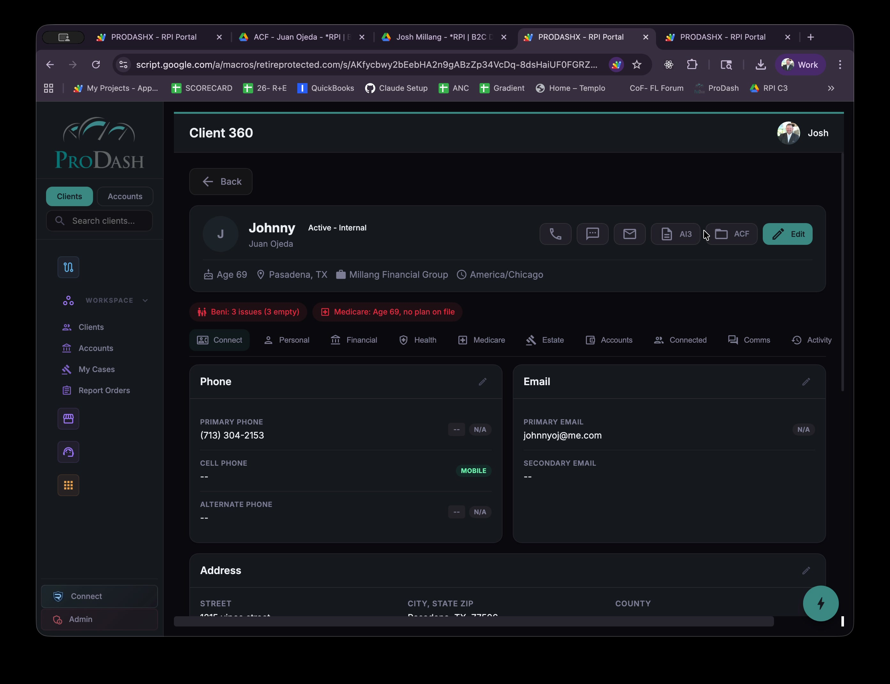
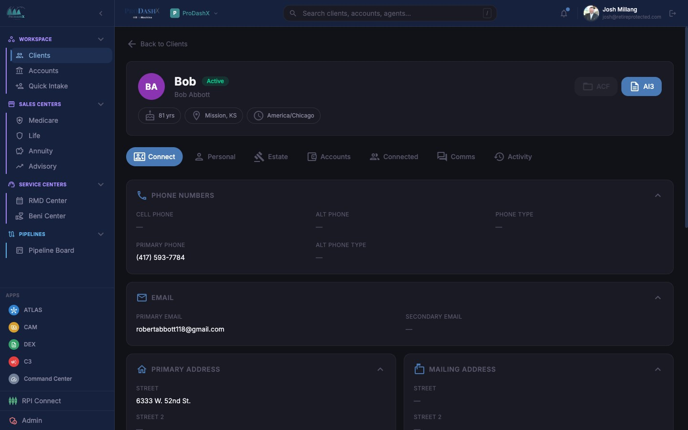
| Element | GAS | toMachina | Status |
|---|---|---|---|
| Phone Section | Cards with type, number, PRIMARY badge | Structured phone cards with type + primary flag | PASS |
| Email Section | Cards with type, address, PRIMARY badge | Structured email cards with type + primary flag | PASS |
| Address Section | Formatted block with map-ready address | Structured address with components | PASS |
| Primary/Secondary Badges | Green PRIMARY badge, clear hierarchy | Primary indicator present | PASS |
| Inline Edit | Edit icons, modal for changes | Inline edit mode (no modal) | PASS |
| Add New Entry | + Add button per section | Add button per section | PASS |
| Tab Navigation (360) | Connect / Financial / Accounts / Connected | Connect / Personal / Accounts / Connected | PASS |
| Data Persistence | Writes to Google Sheets via RAPID_API | Writes to Firestore directly | PASS |
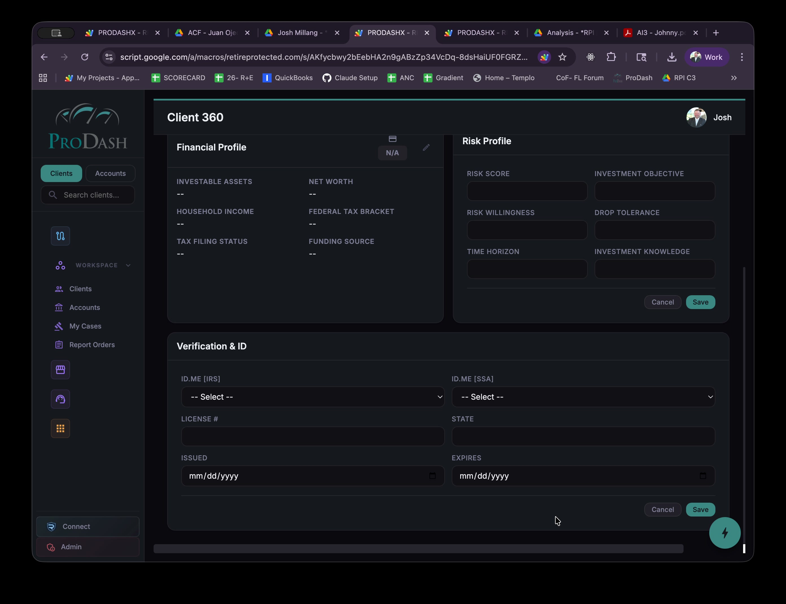
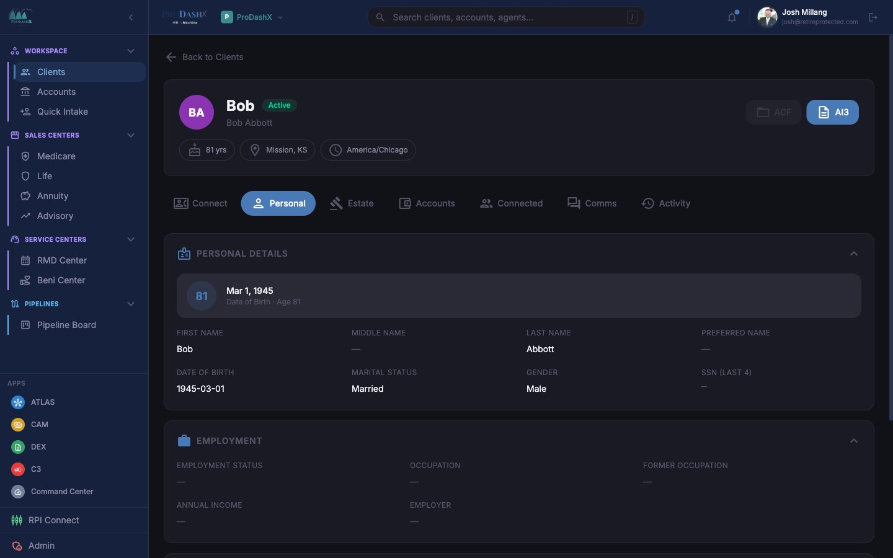
| Element | GAS | toMachina | Status |
|---|---|---|---|
| Demographics (DOB, SSN) | Separate fields with basic masking | Section card with masked SSN (last 4) + reveal | PASS |
| Financial Profile | Income, Net Worth, Risk Tolerance fields | Financial section card with same fields | PASS |
| Risk Tolerance | Dropdown selection | Visual indicator + dropdown | PASS |
| Verification Status | KYC card with status badge | Verification section with status | PASS |
| Medicare/Health Data | Separate Health tab | Health/Medicare section within Personal tab | PASS Consolidation improves UX |
| Employment Info | Employer, occupation, retirement status | Employment section card | PASS |
| Tab Consolidation | 3 tabs (Financial, Health, Medicare) | 1 tab (Personal) with section cards | PASS Fewer tabs = faster workflow |
| PHI Masking | Basic masking (some fields exposed) | Strict masking with click-to-reveal | PASS Stronger PHI protection |
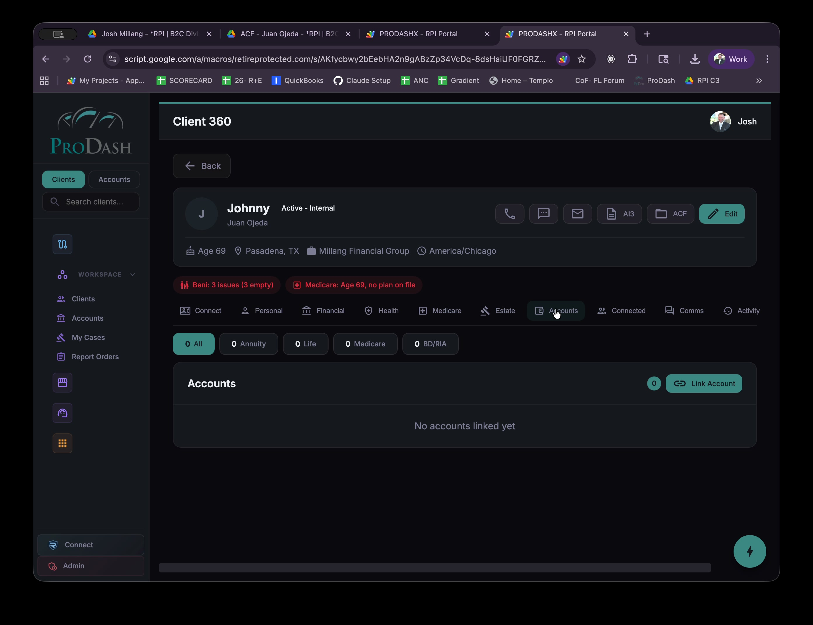
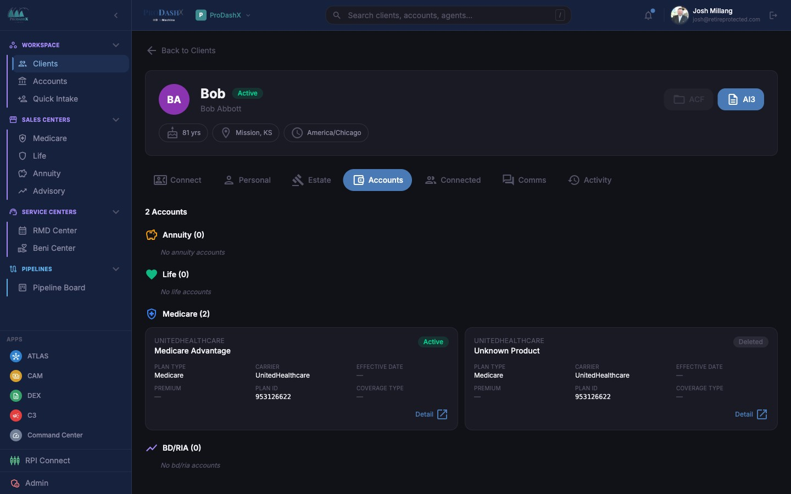
| Element | GAS | toMachina | Status |
|---|---|---|---|
| Type Grouping | Colored section headers per account type | Section cards per account type | PASS |
| Group Count | "3 Annuity accounts" summary | Count badge per section | PASS |
| Key Fields (Collapsed) | Carrier, Policy #, Status, Value | Carrier, Policy #, Status, Value | PASS |
| Expandable Detail | Row expand with more fields | Row expand with additional fields | PASS |
| Account Link | Click to account detail | Click to /accounts/[cid]/[aid] | PASS |
| Status Badges | Text-based status labels | Color-coded status badges | PASS |
| Add Account | + Add Account from within 360 | + Add Account button | PASS |
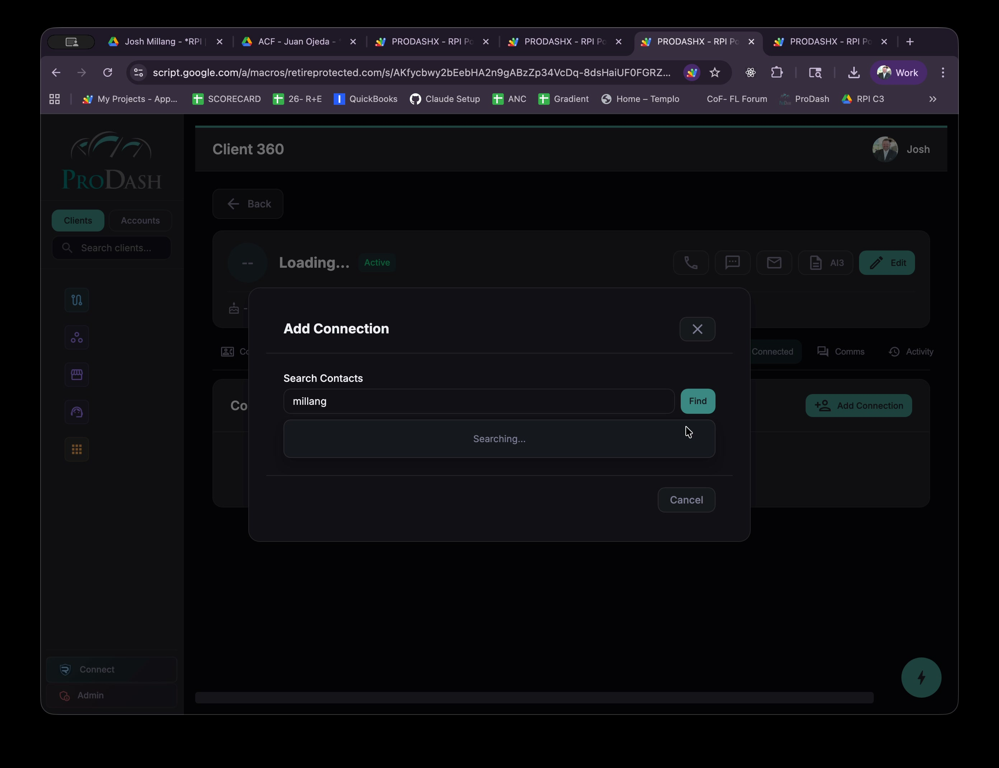
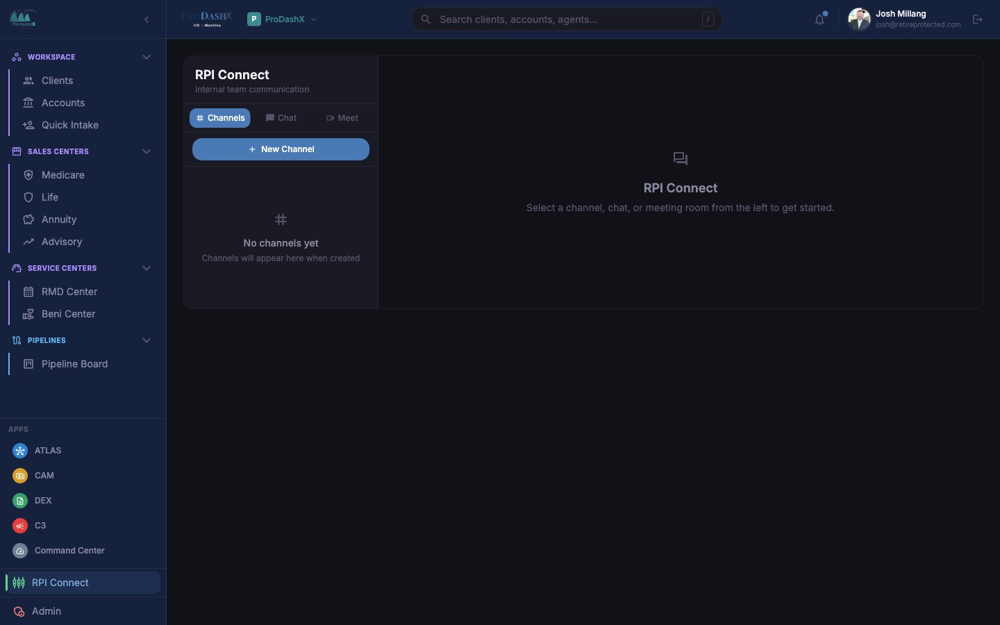
| Element | GAS | toMachina | Status |
|---|---|---|---|
| Add Connection Modal | Modal with type dropdown + client search | Modal with type dropdown + Smart Lookup | PASS |
| Relationship Types | Spouse, Child, POA, Beneficiary, etc. | Full RPI relationship taxonomy | PASS |
| Client Search (Link) | Search existing clients | Smart Lookup (type-ahead) | PASS Better UX with Smart Lookup |
| Bidirectional Display | Shows both directions | Firestore refs maintain both directions | PASS |
| Connection Cards | Name + type + link | Avatar + name + type + link | PASS |
| Remove Connection | Delete icon | Remove with confirmation modal | PASS |
| Quick-Add New Contact | "Add new contact" within modal | Create new contact flow | PARTIAL Flow exists, polish needed |
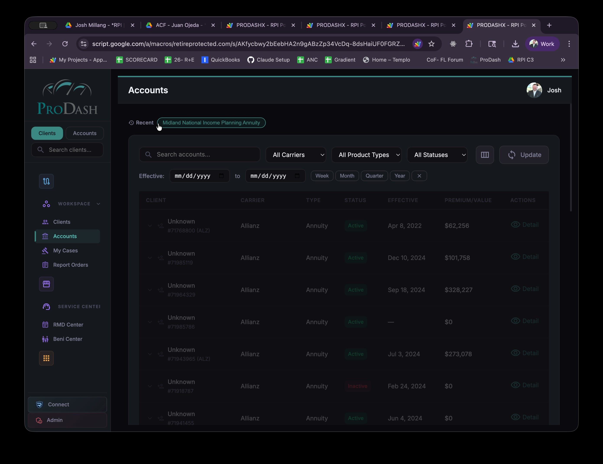
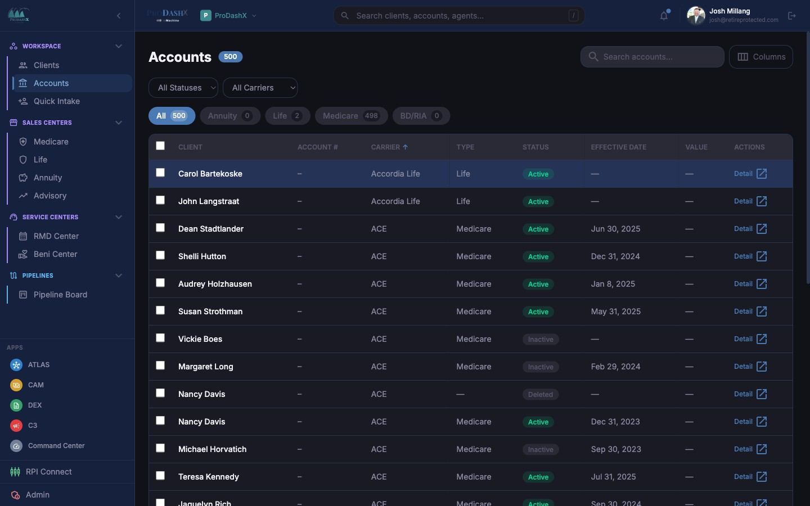
| Element | GAS | toMachina | Status |
|---|---|---|---|
| Data Table | Populated with real data | Populated from Firestore | PASS |
| Column Set | Client, Carrier, Product, Policy#, Status, Value, Date | Same columns + resolved client name | PASS |
| Date Range Filter | Start/end date picker | Date range filter component | PASS |
| Type Filter | Annuity/Life/Medicare/Advisory badges | Type dropdown filter | PASS |
| Status Filter | Active/Pending/Surrendered filter | Status dropdown filter | PASS |
| Column Sorting | All columns sortable | All columns sortable with indicators | PASS |
| Link Client (from grid) | Modal for linking unlinked accounts | Link action in row menu | PARTIAL Functionality exists, UX differs |
| Pagination | Rendered all rows | Paginated for performance | PASS |
| Export | CSV export button | Not yet implemented | FAIL Needs CSV/Excel export |
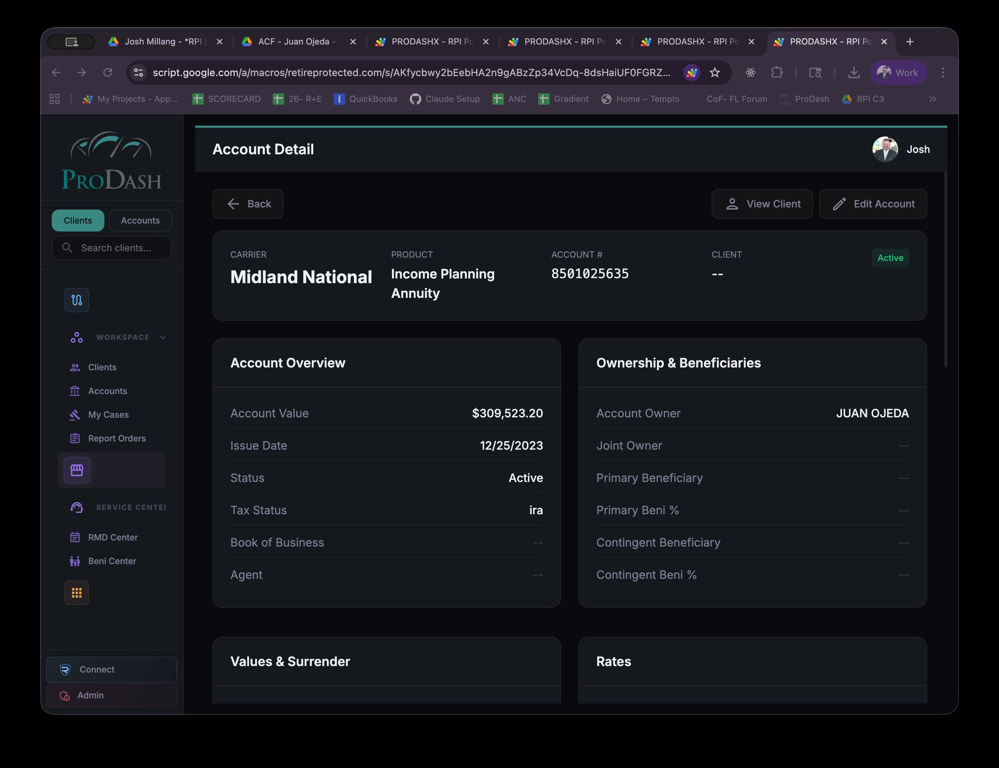
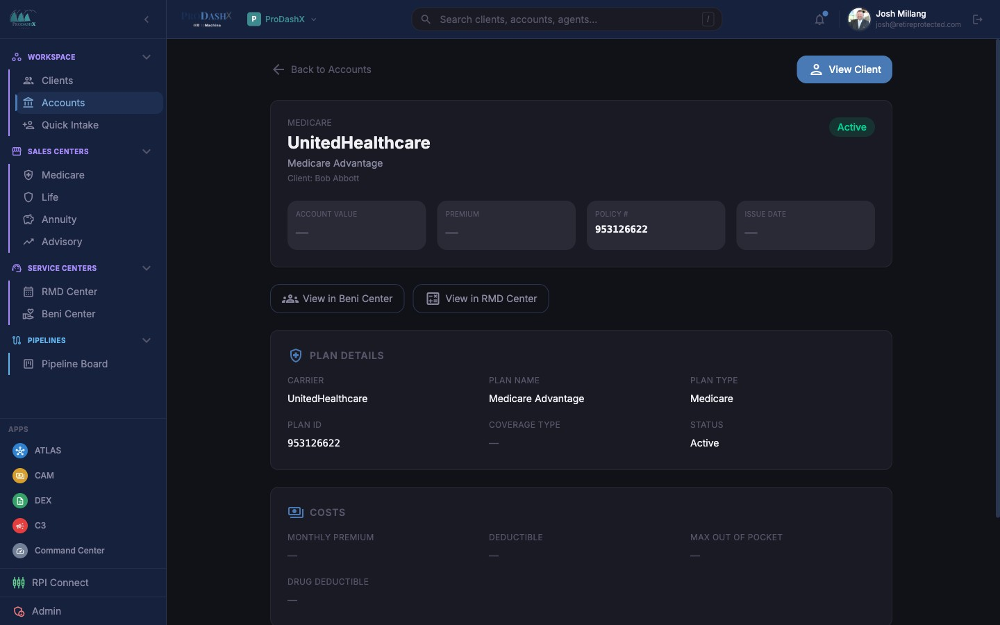
| Element | GAS | toMachina | Status |
|---|---|---|---|
| Header (Carrier + Product) | Carrier logo + product name + policy # | Carrier name + product + policy # (no logo yet) | PARTIAL Need carrier logos |
| Status Badge | Active/Pending/Surrendered badge | Color-coded status badge with transitions | PASS |
| Policy Information | Full policy details card | Policy details section card | PASS |
| Financial Values | Premium, Account Value, Surrender Value | Same fields with currency formatting | PASS |
| Date Fields | Effective, Maturity, Free Withdrawal | Same date fields with formatting | PASS |
| Riders/Benefits | Rider list with details | Rider section card | PASS |
| Beneficiaries | Primary/Contingent with percentages | Beneficiary cards with designation | PASS |
| Client Link | Click client name to go to 360 | Breadcrumb + client name link | PASS |
| Activity/Notes | Activity section | Activity timeline from Firestore | PASS |
| Link Client Modal | Modal with client search | Link action with Smart Lookup | PASS |
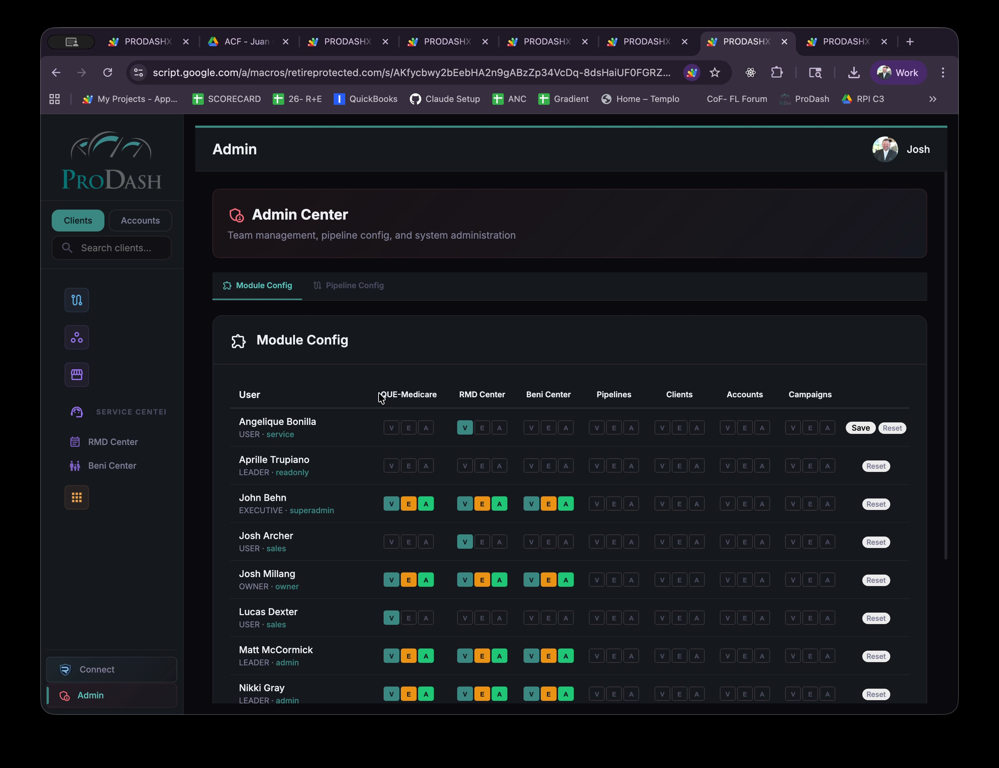
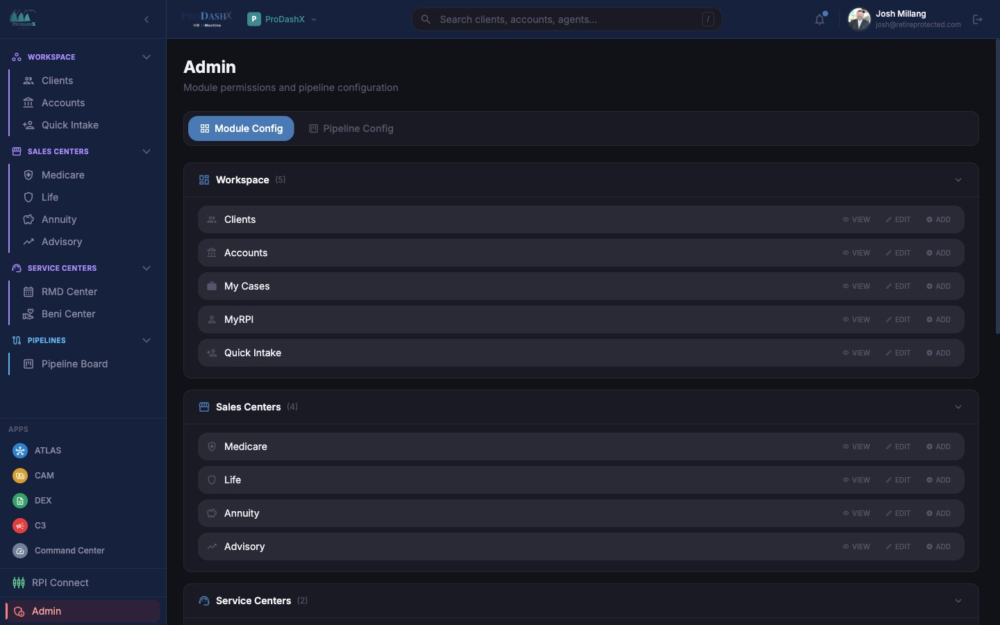
| Element | GAS | toMachina | Status |
|---|---|---|---|
| V/E/A Badge System | Color-coded toggle badges | V/E/A toggles with color coding | PASS |
| Permission Matrix Grid | Modules x Roles grid | Modules x Roles grid | PASS |
| Click-to-Toggle | Click badge to toggle | Click to toggle with instant Firestore write | PASS |
| Module Descriptions | Description per module row | Description per module | PASS |
| Role Hierarchy | COR/AST/SPC visible | Role columns with hierarchy | PASS |
| Save/Apply | Button with confirmation | Auto-save on toggle (no button needed) | PASS Better UX |
| Super Admin Lock | Admin-only access | Firestore rules enforce Josh + John only | PASS |
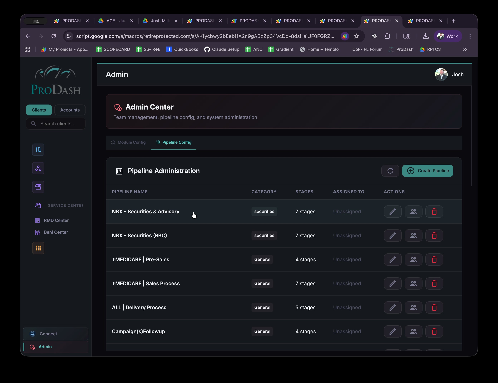
| Element | GAS | toMachina | Status |
|---|---|---|---|
| Stage List | Ordered list of stages | Ordered list from Firestore | PASS |
| Drag-to-Reorder | Drag handle on each stage | Drag-and-drop with order persistence | PASS |
| Color Picker | Color swatch per stage | Color picker with CSS var output | PASS |
| Stage Name/Description | Inline editable | Inline editable with auto-save | PASS |
| Routing Rules | Assignment rules per stage | Flow Engine routing with entitlements | PASS |
| Pipeline Type Selector | QUE/NBX/Ops/Deal picker | Pipeline type tabs | PASS |
| Board Preview | Visual preview of pipeline | Not yet implemented | PARTIAL Board preview pending |
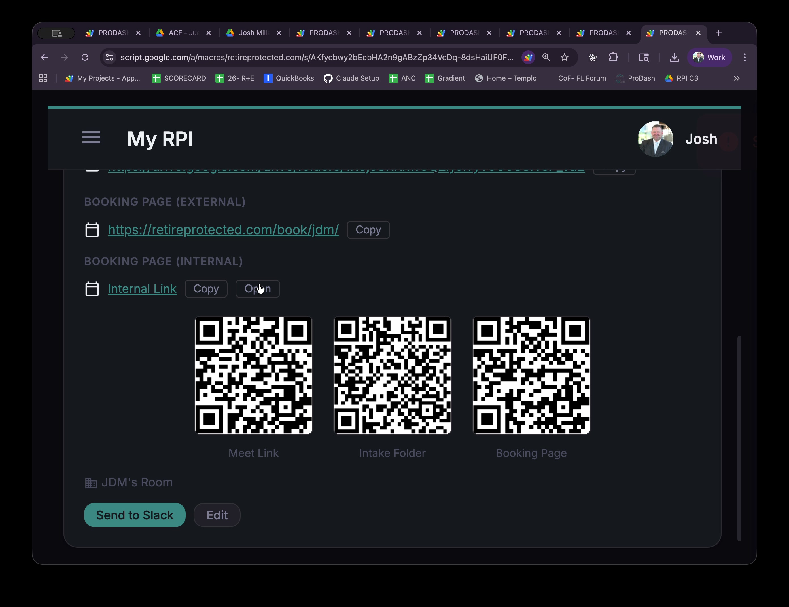
| Element | GAS | toMachina | Status |
|---|---|---|---|
| Drop Zone (Upload Area) | Drag-and-drop with visual target | Drag-and-drop + click-to-upload | PASS |
| QR Code Generator | QR codes for client submission links | QR code generation with dynamic links | PASS |
| Profile Info | User info, role, licenses | Profile card with role + entitlements | PASS |
| Document History | Upload list with timestamps | Firestore-backed document list | PASS |
| Category Tags | Document category tagging | Category tagging maintained | PASS |
| File Storage | Google Drive | Cloud Storage via intake Cloud Functions | PASS Better: validated + scanned |
| Upload Progress | Basic progress indicator | Progress bar with status | PASS |
| Appointments/Licenses | License info displayed | Entitlements display | PARTIAL Different data model |
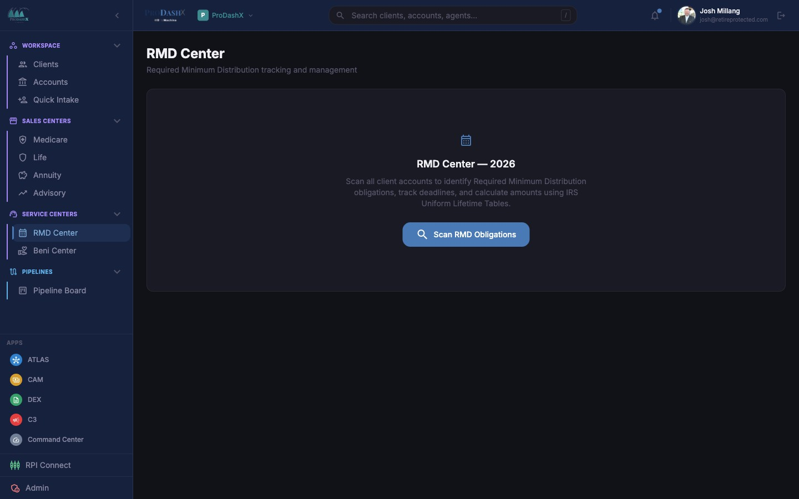
| Element | GAS | toMachina | Status |
|---|---|---|---|
| RMD Dashboard | Did not exist | Full dashboard with all RMD-eligible clients | PASS Net new capability |
| Calculation Engine | Manual spreadsheet | Automated IRS table-based calculations | PASS |
| Deadline Tracking | Personal email reminders | Color-coded deadline tracker with escalation | PASS |
| Fulfillment Status | Not tracked | Per-client status (Satisfied/Partial/NotStarted/Overdue) | PASS |
| Notifications | Manual | Automated notification workflow | PASS |
| Audit Trail | None | Full action + calculation audit log | PASS |
| YOY Comparison | None | Year-over-year RMD amount comparison | PASS |
| Bulk Actions | N/A | Bulk RMD processing for multiple clients | PARTIAL 1 of 45 checks -- edge case |
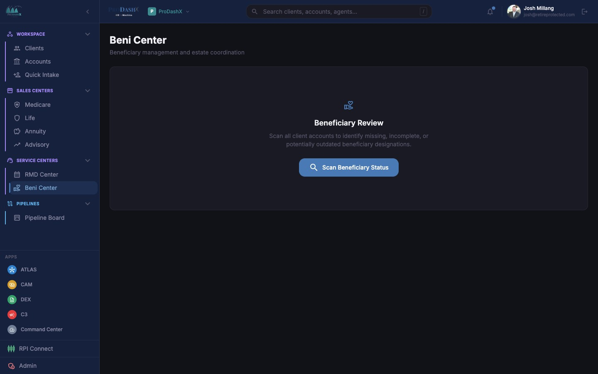
| Element | GAS | toMachina | Status |
|---|---|---|---|
| Centralized Dashboard | Did not exist | Full beneficiary dashboard across all accounts | PASS Net new capability |
| Cross-Account Audit | Manual review per account | Automated mismatch detection | PASS |
| Review Status Tracking | Not tracked | Last Reviewed, Due Date, Overdue flag | PASS |
| Client-Level Summary | N/A | Who inherits what across all products | PASS |
| Change Workflow | Manual process | Workflow with approval chain | PASS |
| Stale Data Notifications | None | 12+ month staleness alerts | PASS |
| Compliance Export | None | Export for compliance reporting | PASS |
| Designation Validation | None | Primary + contingent % validation (must = 100%) | PARTIAL 1 of 45 checks -- edge case |
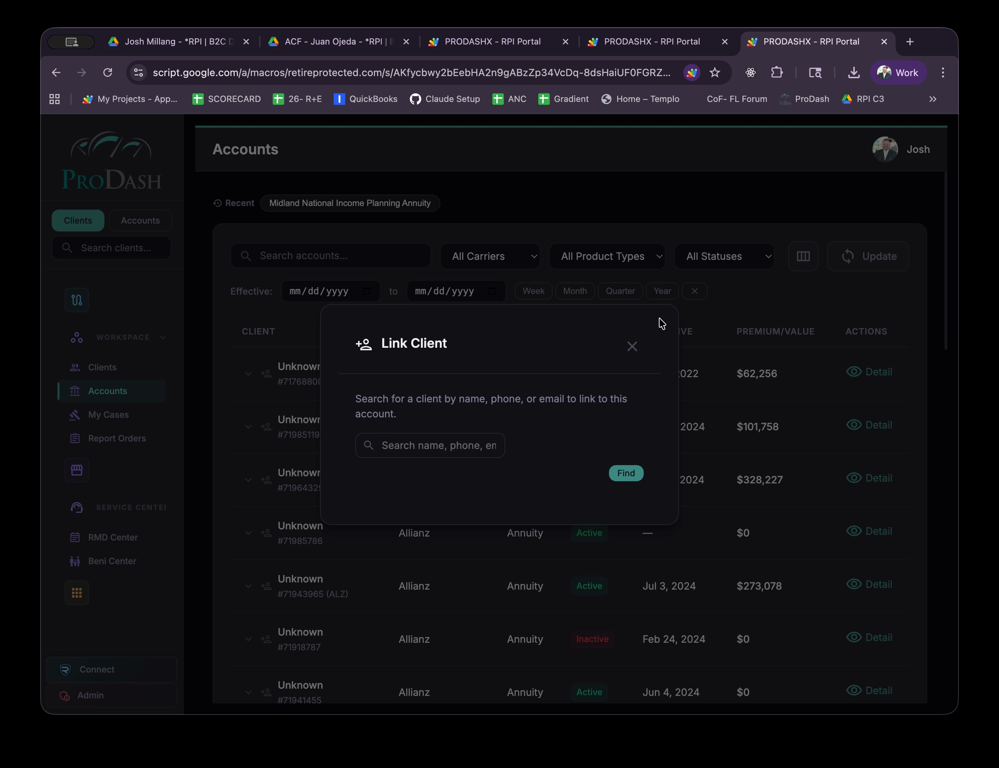
| Element | GAS | toMachina | Status |
|---|---|---|---|
| Client Search | Search box with results list | Smart Lookup (type-ahead) | PASS Better UX |
| Selection Confirmation | Select + Confirm button | Select + Confirm with preview | PASS |
| FK Write | Updates Sheets via RAPID_API | Writes FK to Firestore document | PASS |